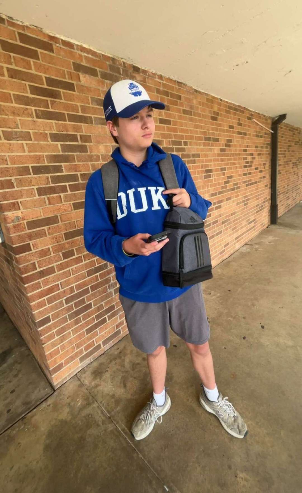

Let's do this boys 🔥
Grason • Luke • Carter
Full Detailed Guide
Obtain and upgrade all the elemental staffs.
Make sure all generators are on for this!
Now pedestals will spawn.
All generators need to be on for this.
How to get them:
1. Go to Tank Station and grab the glowing stone on the desk.
2. Bring it to the Church and put it into the basin of holy water.
3. Cleanse it by killing zombies (melee only) — it will turn silver when finished.
4. Go back to the Tank Station without stepping in mud to keep the tablet clean.
5. Put it back where you first grabbed it and melee kill 20 more zombies until the G-Strikes spawn.
Once acquired:
Build the Maxis Drone (I think that's what it's called) and throw it out near the pit near where the Lightning Staff is built (same spot you throw the G-Strikes). A ton of Panzers will spawn. Fire Staff recommended or Lightning Staff.
Consume the Zombie Blood from the reward chest in spawn. Once done you will be able to see a plane on fire in the sky — shoot at it.
Once done, a pilot will fall. He can only be seen with Zombie Blood. Run clockwise around the Excavation Site. He does not look special but once killed will drop a drone.
Tip: To get blood, grab Ice Staff and shoot wagons that are on fire.
Pilot spawn locations:
You will need the Thunder Punch. Fill the 4 soul chests (especially where the robot steps). PS: If the robot steps on the chest it will reset your progress.
Once done, click the Thunder Punch reward from the orange soul chest (at Church generator).
Once you have it, go to the bottom of the Excavation Site. Zombies with white mist will spawn — kill them. The type of new fist upgrade you get depends on the type of staff you are currently holding. (Everyone will need a fist upgrade) — idk why.
Go to the Crazy Place and put all the staffs in their holders. (You will not be able to pick up the staffs for the duration of this process).
Once done, kill zombies in the Crazy Place until your screen flashes white. Kill Joy Gobblegum will help a lot in high rounds.
You will get an achievement called "Little Lost Girl"
Take the Maxis Drone and fly it in the Crazy Place.
(Lore: Maxis is one of the mad scientists that Richtofen killed. He killed that stupid girl you hear. Once father and daughter meet in Agartha...)
Everyone will have to get in the middle of the Crazy Place, look in the sky, press a button and that's the end.
Future Carter here — I hope we did this :) ❤️